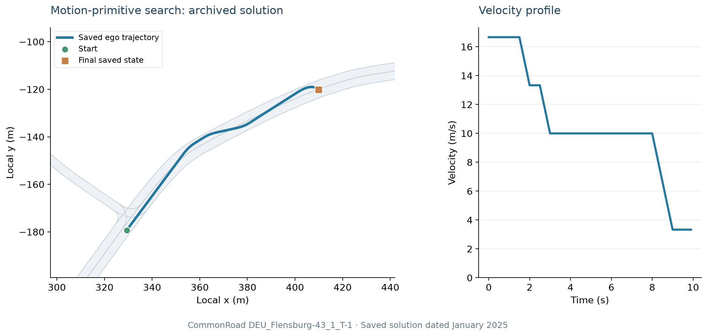

Method at a glance
How it works
- 01Traffic scenarioLanelets, obstacles, initial vehicle state, and a goal region
- 02Primitive expansionConnect feasible short vehicle motions into candidate paths
- 03Rank & pruneBalance goal progress and path quality; reject unsuitable branches
- 04Save trajectoryReturn a sequence of vehicle states in the CommonRoad solution format
Project workflow schematic.
The task
The planner receives a road network, static and dynamic obstacles, the ego vehicle's initial state, and a planning goal. It must find a vehicle trajectory that respects the scenario's constraints while reaching the requested position or time interval.
This is a classical planning project: its central component is a search algorithm over a library of motion primitives. It does not require a neural network or a supervised training dataset.
Search and heuristic design
I chose a greedy best-first formulation after comparing several A* designs with the course baseline. The practical objective was to find useful solutions within the competition's computation budget, while keeping the vehicle's motion consistent with the evaluation criteria.
The heuristic combines progress toward the goal with trajectory-quality terms, including orientation error, velocity error, steering-related costs, and acceleration. For goals specified primarily by a time interval, the evaluation is adjusted to prioritize the required temporal behavior.
Goal distance is treated as a separate progress factor. The presentation describes a fifth-power distance weighting to encourage decisive progress, while allowing the quality terms to distinguish candidate motions at similar distances. This is a practical ranking heuristic, rather than a claim of an admissible heuristic or globally optimal planning.
Constraints and pruning
- Time restriction: discard branches that exceed the planning goal's allowed time interval.
- Road membership: discard states that cannot be associated with a valid lanelet.
- Obstacle proximity: reject unsuitable states with insufficient clearance to surrounding traffic.
- Primitive selection: compare constant-speed and more diverse speed primitives, recognizing the trade-off between expressive maneuvers and search cost.
Scenario data and implementation
The implementation uses the CommonRoad Search framework and XML scenarios. Each scenario supplies a lanelet network, obstacle states and trajectories, and a planning problem. The saved solutions contain the planned ego state sequence, including position, orientation, steering angle, velocity, and time.
The archived experiments span different road layouts and traffic situations. The figure below is replotted directly from one saved January 2025 solution for DEU_Flensburg-43_1_T-1, together with its corresponding lanelet geometry and velocity profile.
Experiments and lessons
I used ablation-style comparisons to decide which heuristic and pruning ideas to retain. Some seemingly reasonable additions—such as stronger lane-connectivity pruning or simple reachability pruning—reduced the number of solved cases in the experiments described in the presentation.
The main lesson was to evaluate each addition against the actual scenario set and time budget. A more elaborate heuristic or larger primitive library can introduce corner cases or consume enough extra search time to offset its theoretical appeal. The final project received first prize in the course challenge.
Project visuals


Related resources
- CommonRoadScenario format, benchmarks, and autonomous-driving planning tools.
Based on my CommonRoad challenge approach presentation, the student planner implementation, and archived scenario/solution files. Course edition: 2024–2025.